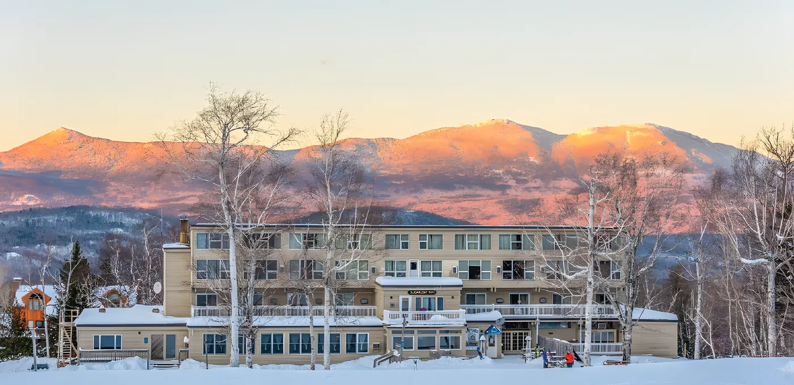
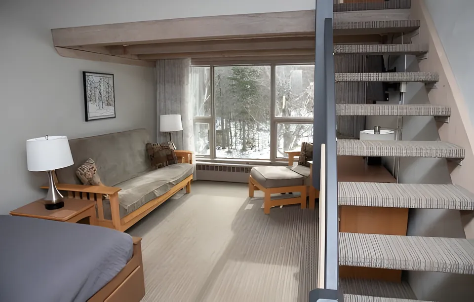
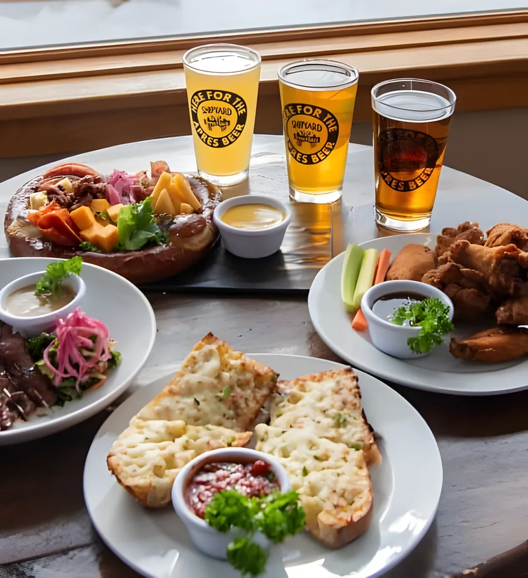

Slopeside on Sugarloaf since 1962
Sugarloaf Inn was built as the first ski-in/ski-out lodge on the mountain. Boot up in your room, ski out the door, and come back to the Brew Haus in the heart of the Inn.

A history in postcards
Sugarloaf from 1959 to 1977, as the Inn’s own site tells it. Turn any card over to read what was printed on the back.
-
1959
Ski Lodging
Printed on the back: “Maine’s Largest Skiing area – On Route 27 between Kingfield and Stratton”
-
1959
Sun Decks
Printed on the back: “Looking down on the Sun Decks of the Harvy Boynton Ski Shop, featuring Maine’s largest and finest selection on the slopes”
-
1960
End of Day
Printed on the back: “Skiing at Sugarloaf Mountain, Maine”
-
1961
The Snowfields
Printed on the back: “Wedeling on the S.E. Snowfields of Sugarloaf Mt. in perfect spring conditions. Bigelow Mt. 4150 ft in background”
-
1961
Majestic Sugarloaf
Printed on the back: “Majestic Sugarloaf, Maine’s largest and finest ski area”
-
1962The Inn is built
Winter’s Way
Printed on the back: “Ski Patrol, skiing one of the more difficult trails in winter’s wonderland, after a heavy spring snowfall”
-
1963
Mt. Bigelow
Printed on the back: “Mt. Bigelow and Carrabassett River from Base of Sugarloaf Mountain Ski Area. 150 to 200 inches of snow make for the best late spring skiing in Maine”
-
1964
Alpine Ski Race
Printed on the back: “Sugarloaf Mountain, site of the 1961 National Alpine Ski Races. Skiers admire panorama looking toward Mt. Bigelow”
-
1964
Base Lodge
Printed on the back: “A portion of the interior of the spacious base lodge showing the snack bar”
-
1968This is the Inn
Sugarloaf Inn
Printed on the back: “On The Mountain – Luxurious Accommodations within walking distance of the Slopes. Music, Movies, Entertainment. Cocktail Lounge”
-
1968
A New Lodge
Printed on the back: “View of the Ski and Gift Shop with sun deck and the New Lodge and Restaurant at Sugarloaf Mountain”
-
1969
Gondola Arriving
Printed on the back: “Gondola arriving at the summit of Sugarloaf Mountain. The famous 4-passenger cars travel 9000 feet from the base lodge.”
-
1969
Spring Snow Fields
Printed on the back: “Snow Fields on summit of Sugarloaf Mountain. Skiers racing on the Snow Fields in April. The Snow Fields offer the best late spring Skiing”
-
1969
Top of Tote Road
Printed on the back: “Maine’s Largest and best known ski area. Offers the longest skiing season in the East. Pictured here is the top of Tote Road”
-
1969
Busy Base Lodge
Printed on the back: “Base lodge is adjacent to gift shop and sun deck. Skiers watch ski instructors demonstrate the best technique – Mt. Bigelow in background”
-
1970
A Walk and a View
Printed on the back: “Ideal skiing December to May. View showing new ski trails from Sugarloaf Mountain Road”
-
1970
Summit Lodge
Printed on the back: “Unique octagon lodge and restaurant, summit of Sugarloaf Mountain, Kingfield, Maine. Panorama views of mountains on all sides”
-
1971
Big Air
Printed on the back: “Expert, skiing one of the more difficult trails”
-
1972
Leaving the Summit
Printed on the back: “Skiers leaving summit on one of the many trails designed for beginner, intermediate, or expert skier”
-
1976
Blue Ox Lodge
Printed on the back: “Sugarloaf’s finest four season apartment motel. Offering vacation housekeeping units on the mountain”
-
1977
Heavy Snow
Printed on the back: “Heavy snowfall overnight at Sugarloaf Mountain, Maine”
The full story, and every card side by side: Our history
Rooms that look at the mountain
Couples, families or small groups. Every room has large windows toward Sugarloaf or the Bigelow Range.
Queen Room
Sleeps 22nd floor, stairs only. One queen bed.
Double Queen Room
Sleeps 43rd floor, stairs only. Two queen beds.
King Room
Sleeps 22nd floor, stairs only. One king bed.
Loft Rooms
Sleeps 53rd floor, stairs only. Queen bed loft, plus a full/twin trundle, queen sofa bed or couch downstairs.
Every room: private bathroom, slope-side ski locker or secure bike storage, housekeeping on request.
See every room type

From the slope to your door
Ski-in, ski-out
End your day just steps from the slopes, and start each morning booting up in your own room.
A private ski locker
Every room includes one, so your gear stays secure and organized for the whole stay.
The Shipyard Brew Haus
In the heart of the Inn: fuel up before the mountain or wind down after it. Open mid-December to mid-April and Homecoming Weekend, with breakfast in season.
Book your stay with the front desk
Call or email the Inn for dates and rooms. Season pass holders and groups of 4+ rooms: ask about discounts.
5000 Commons Circle, Carrabassett Valley, ME 04947